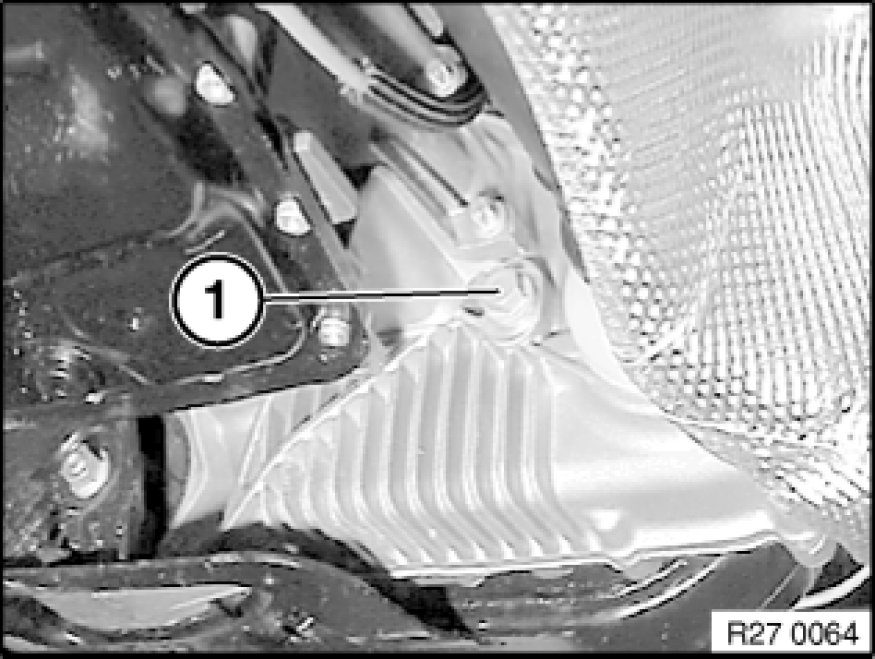

Changing Oil In Transfer Box (ATC 400/500)
00 11 572 - Changing oil in transfer box (ATC 400/500)

Important!
When changing the gear oil, it is necessary to delete the self-adapting wear values in the transfer box control unit.
Refer to Service functions.
Use only the approved transmission fluid.
Failure to comply with this requirement will result in serious damage to the transfer box!

Catch and dispose of escaping transmission fluid.
Observe country-specific waste-disposal regulations

Note:
ATC 500 transfer box:
Undo oil filler plug (1).
Tightening torque 27 00 11AZ [1][2]Mechanical Specifications.
Note:
ATC 500 transfer box:
Remove oil drain plug (2).
Tightening torque 27 00 11AZ [1][2]Mechanical Specifications.

Note:
ATC 400 transfer box:
Release oil filler plug (1) and oil drain plug (2).
Tightening torque 27 00 11AZ [1][2]Mechanical Specifications.

Installation Note:
Replace sealing rings.
Clean oil drain plug (2) and screw in.
Pour in gear oil up to lower edge of filler plug (1).
Tighten in filler screw (1).
Tightening torque 27 00 11AZ [1][2]Mechanical Specifications.